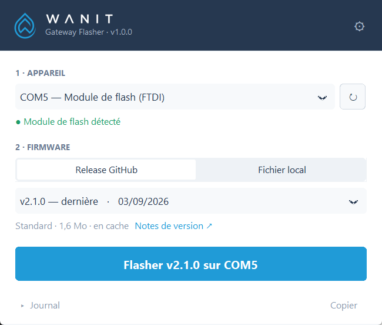
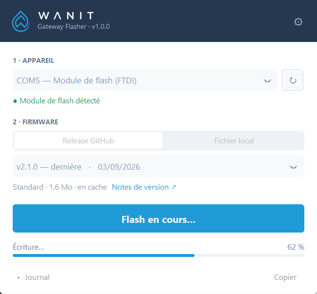
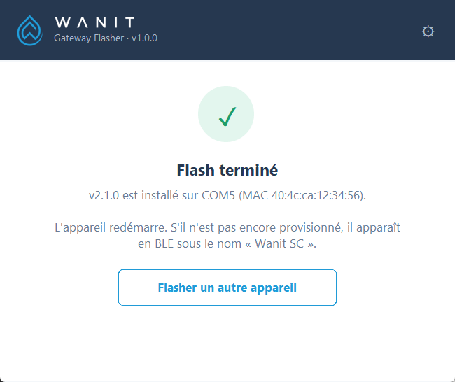
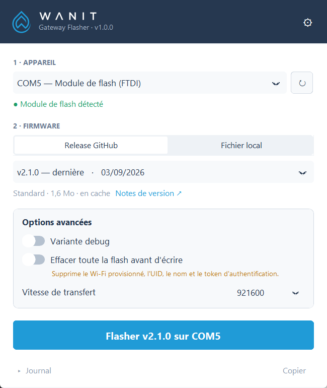
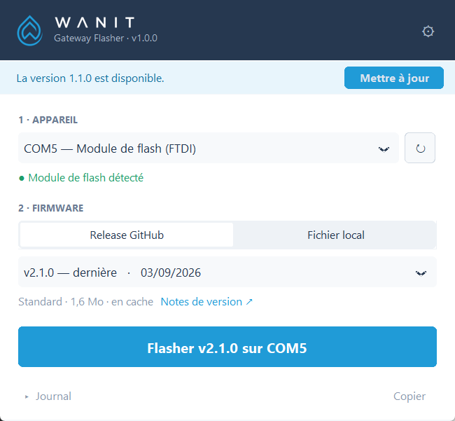
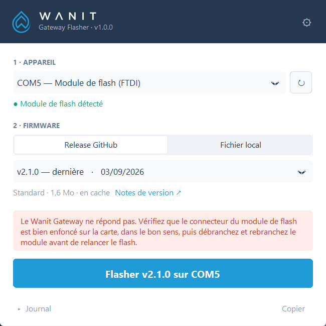

Flasher le firmware du Wanit Gateway (ESP32-C6) depuis un PC Windows, sans installation ni ligne de commande.
Ce lien donne toujours la dernière version de l'utilitaire :
| Système | Windows 10 ou 11, 64 bits. Aucun droit administrateur nécessaire. |
| Module de flash | Le module tout-en-un USB vers connecteur Segger fourni par Wanit. Il passe seul la carte en mode flash : aucun bouton à manipuler. |
| Pilote | Installé automatiquement par Windows au premier branchement du module (pilote FTDI). |
| Connexion Internet | Recommandée pour récupérer les versions du firmware. Possible hors ligne avec un fichier local ou une version déjà téléchargée. |
| Appareil | Wanit Gateway (ESP32-C6). Tout autre modèle est détecté et refusé avant écriture. |
Il n'y a rien à installer : l'utilitaire est un seul fichier, WanitGatewayFlasher.exe, que l'on lance directement.
Placez-le dans un dossier personnel, par exemple Documents\Wanit ou sur le Bureau, puis créez éventuellement un raccourci (clic droit → Afficher d'autres options → Envoyer vers → Bureau). Évitez C:\Program Files : l'utilitaire ne pourrait pas s'y mettre à jour tout seul.
L'utilitaire n'est pas signé avec un certificat de code payant. Windows et les navigateurs se méfient donc d'un programme qu'ils ne connaissent pas encore. Le fichier est publié directement par Wanit sur GitHub, et son empreinte SHA-256 est affichée sur la page de chaque version.
Ces avertissements n'apparaissent qu'une seule fois : ensuite, l'utilitaire se met à jour lui-même.
Si le navigateur indique que le fichier « n'est pas fréquemment téléchargé » :
Si Windows affiche « Windows a protégé votre ordinateur » :



La carte redémarre et conserve son Wi-Fi, son UID, son nom et son token. Si elle n'a jamais été configurée, elle apparaît en Bluetooth sous le nom Wanit SC, prête à être provisionnée. Pour flasher une autre carte, cliquez sur Flasher un autre appareil.

| Variante debug | Installe la version avec journaux détaillés, utile au diagnostic. Pas en production : elle expose des informations sensibles sur le port série. |
| Effacer toute la flash | Efface toute la mémoire avant d'écrire. Le Wi-Fi, l'UID, le nom et le token sont perdus ; une confirmation est demandée. |
| Vitesse de transfert | 921600 bauds par défaut. Si le flash échoue en cours d'écriture (rallonge USB, hub), choisissez une valeur plus basse. |
L'onglet Fichier local permet de flasher un .bin reçu par ailleurs (support, test). Le fichier est contrôlé avant le flash :
Accepté une image complète …-full.bin pour ESP32-C6.
Refusé une image OTA …-ota.bin, une image incomplète ou prévue pour une autre puce.
Chaque version flashée une fois reste en mémoire sur le PC. Hors ligne, ces versions restent proposées (mention « hors ligne » sous la liste).
Sans aucune version en mémoire, l'utilitaire passe automatiquement sur Fichier local : il suffit alors de fournir le fichier esp32-ble-wifi-uart-bridge-full.bin récupéré sur un autre poste.

À chaque lancement, l'utilitaire vérifie s'il existe une version plus récente. Si c'est le cas, une bannière bleue apparaît : cliquez sur Mettre à jour. La nouvelle version est téléchargée, vérifiée, puis relancée automatiquement. Rien ne se fait sans votre accord, et jamais pendant un flash.
En cas d'échec, un message en rouge indique la cause et la marche à suivre, et le journal détaillé s'ouvre. Un échec ne peut pas endommager la carte : le mode téléchargement est gravé dans la puce, on peut donc toujours corriger le problème et relancer le flash.
| Symptôme | Solution |
|---|---|
| Aucun port n'apparaît (« Branchez un appareil ») | Débranchez et rebranchez le module, ou essayez un autre port USB du PC, sans hub. Au tout premier branchement, laissez à Windows une minute pour installer le pilote. S'il ne s'installe pas, téléchargez le pilote « VCP » sur le site de FTDI (ftdichip.com). |
| « Le Wanit Gateway ne répond pas » | Vérifiez que le connecteur du module est bien enfoncé sur le connecteur Segger de la carte, et dans le bon sens. Débranchez puis rebranchez le module, et relancez le flash. |
| « Le port COMx est occupé » | Un autre programme utilise le port : fermez le moniteur série, Arduino IDE, PuTTY, une autre instance de l'utilitaire, etc. |
| « L'appareil … n'est pas un ESP32-C6 » | Le port sélectionné correspond à un autre appareil. Choisissez le port « Module de flash » dans la liste. Rien n'a été écrit. |
| Échec en cours d'écriture | Ouvrez la roue crantée et baissez la vitesse de transfert (460800 puis 115200), puis relancez. |
| « Fichier non valide » | Le fichier local n'est pas une image complète pour ESP32-C6. Utilisez esp32-ble-wifi-uart-bridge-full.bin, jamais …-ota.bin. |
| « GitHub est injoignable » | Vérifiez la connexion Internet ou le proxy de l'entreprise. En attendant, utilisez une version en mémoire ou un fichier local. |
| L'antivirus bloque le fichier | Téléchargez-le uniquement depuis le lien officiel (page 1). Ajoutez-le aux exceptions de l'antivirus si votre politique le permet. |

Documentation du firmware (protocole, guides d'intégration, notes de version) :
github.com/Math0XK/wanit-gateway-releases